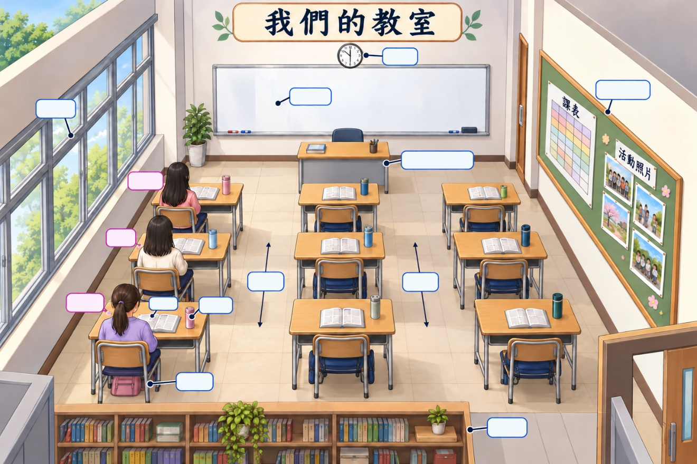
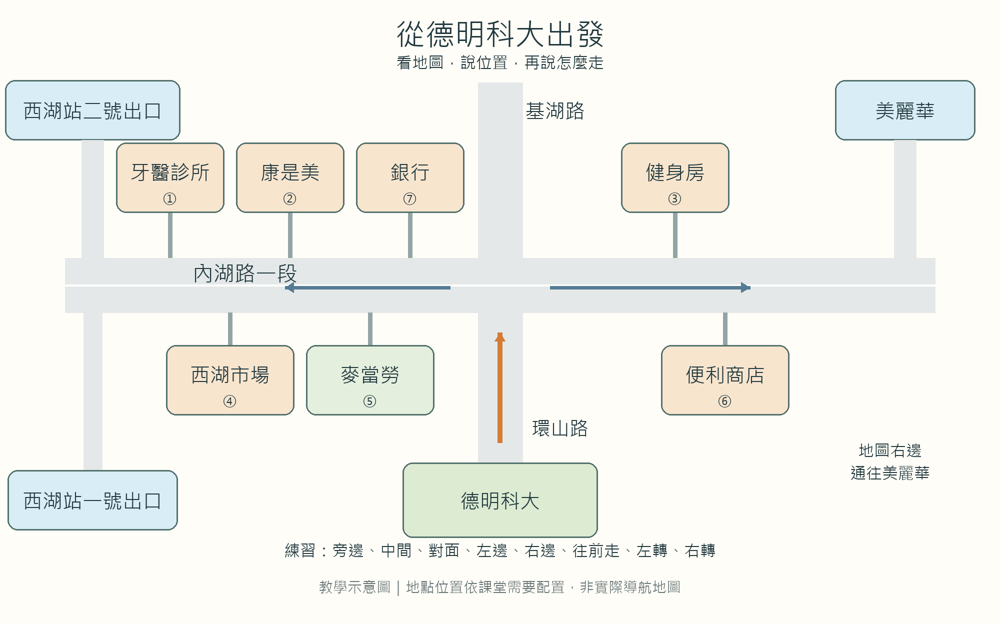

我們的華語教室在大學教學大樓的三樓。走進教室，前面是白板，後面有書櫃。老師的桌子在白板前面，時鐘掛在白板上方。教室左邊有窗戶，右邊是公布欄，上面貼著課表和活動照片。
教室中間有幾排桌椅，兩排桌子中間留著走道。我的座位在窗戶旁邊，美玲坐在我前面，淑惠坐在我後面。桌上放著課本和水杯，椅子下面有書包。上課時，老師沿著走道移動，走到學生旁邊回答問題。同學穿過兩排桌子中間的走道，朝白板走去。
01 ／ 認識位置與移動
點選詞語看例句，也可以對照貓咪的位置說一說。
點選上方詞語，看看它怎麼用。
02 ／ 閱讀生活情境
先讀短文，再找出人物和物品的位置。
我們的華語教室在大學教學大樓的三樓。走進教室，前面是白板，後面有書櫃。老師的桌子在白板前面，時鐘掛在白板上方。教室左邊有窗戶，右邊是公布欄，上面貼著課表和活動照片。
教室中間有幾排桌椅，兩排桌子中間留著走道。我的座位在窗戶旁邊，美玲坐在我前面，淑惠坐在我後面。桌上放著課本和水杯，椅子下面有書包。上課時，老師沿著走道移動，走到學生旁邊回答問題。同學穿過兩排桌子中間的走道，朝白板走去。
03 ／ 看圖找位置
用短文找線索，完成圖中的空白標籤。

座位由靠近白板到後方依序是：美玲、我、淑惠。書包在椅子下面。
04 ／ 從德明科大出發
看地圖、確認面向，和同伴一起完成問路任務。

本圖為教學示意圖，非實際導航。左、右依行進面向判斷；從西湖站二號出口出站後，往左邊走到康是美。
兩人一組 ／ 輪流問路
甲：請問＿＿怎麼走？
乙：先＿＿，再＿＿。
甲：所以＿＿，對嗎？
05 ／ 從生活方位到臺灣地理
讀課文、認識生詞，再用完整句子介紹臺灣。
台灣是一個南北長、東西窄的海島，在亞洲大陸的東南方。東邊有太平洋，西邊是台灣海峽，四周還有很多國家。韓國、日本在台灣的東北方；菲律賓在台灣的南方，中國在台灣的西方。台灣除了本島，四周還有澎湖、金門、馬祖等小島。
國際大都市台北在台灣的北部，那裡有摩天大樓101、故宮博物院能讓你大開眼界；台灣中部有高山，最高的就是玉山；東部的花蓮有迷人的風景值得欣賞，像太魯閣就是非去不可的地方；西部有平原，台灣大部分的人口都集中在這裡；台灣南部的墾丁有漂亮的海灘，每年夏天吸引不少遊客。有機會你一定要親自來看看台灣這個美麗的小島。
一個地區中主要的島嶼。
除了臺灣本島，附近還有許多小島。
一個地方周圍的各個方向。
學校四周有很多商店。
與不同國家之間的交流或事務有關。
我們學校有來自不同國家的國際學生。
非常高的大樓。
站在摩天大樓上，可以看到很遠的地方。
看到新奇的事物，增加見識。
博物館裡的展覽讓我大開眼界。
花這個錢或時間很划算、有價值。
陽明山風景很美，很值得去。
用心觀看或聆聽，感受其中的美好。
我喜歡坐在山上欣賞風景。
一定要做某件事。
國際生的活動很重要，我非去不可。這件衣服又便宜又漂亮，我非買不可。
聚集在同一個地方。
這個城市的商店大多集中在車站附近。
自己本人去做，不是別人代替。
這道菜很容易做，你可以親自做做看。
甲在乙的東邊／西邊。
例：太平洋在臺灣的東邊。
地點在地區的北部／南部／東部／西部／中部。
例：臺北在臺灣北部。
……除了……，還有……。
例：餐廳除了賣簡餐，還有賣咖啡跟甜點。
……很值得……，因為……。
例：故宮博物院很值得去，因為可以欣賞文物。這部影片很值得看，因為故事很感人。
請根據課文回答問題，用完整句子作答。寫完後，展開參考答案與同伴討論。
臺灣的東邊有太平洋，西邊是臺灣海峽。
韓國和日本在臺灣的東北方，菲律賓在臺灣的南方。
臺灣除了本島，四周還有澎湖、金門、馬祖等小島。
臺北在臺灣北部。課文介紹了台北101和故宮博物院。
根據課文，臺灣最高的山是玉山，位於臺灣中部。
花蓮在臺灣東部；課文介紹的景點是太魯閣。
臺灣大部分的人口集中在西部，因為西部是平原。
作答會保存在此瀏覽器。
教材來源：教師提供《臺灣的位置與景點》。課文保留原文；參考答案供課堂討論。